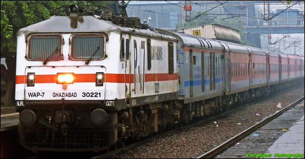
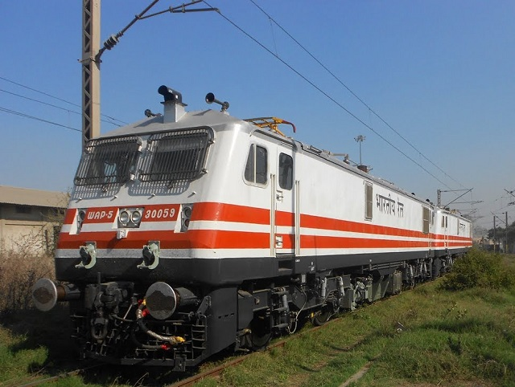
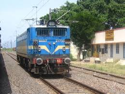
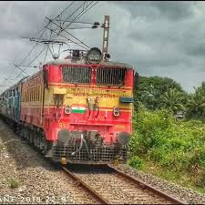

The WAP 7 (Wide/broad Gauge AC Electric Passenger, Class 7) is a three-phase AC electric passenger locomotive developed by the Chittaranjan Locomotive Works.
It is the most powerful passenger locomotive in the Indian Railways' fleet.
It is a passenger variant of the WAG 9 freight locomotive with a modified gear ratio to pull lighter loads at higher speeds.
It is capable of hauling 24 coach trains at speeds ranging between 110–140 km/h (68–87 mph), depending on the MPS (Maximum Permissible Speed) of the sector,and is now largely used by Northern Railways (NR), South Central Railways (SCR),
Southern Railways (SR), South Eastern Railways (SER), West Central Railways (WCR),and Eastern Railways (ER) among other zones.
As of February 2019, there are 599 locomotives in service, all of which are fitted with tightlock couplers (for central buffer coupling) and chain link couplers.
In February 2017, Diesel Locomotive Works built their first WAP 7 class locomotive.

WAP 5 is the name of a class of "High Speed" electric locomotives produced and used by Indian Railways.
The first 10 locomotives were imported from ABB in Switzerland in 1995.
They are supposed to be a variant of the Swiss Lok 2000 (Design concept) and German DB Class 120 (mechanical chassis).One of the notable features of WAP-5 is regenerative braking.
Other notable features of this loco are the provision of taps from the main loco transformer for hotel load, pantry loads, flexible gear coupling, wheel-mounted disc brakes, and a potential for speed enhancement to 200 km/h (120 mph).
Braking systems include 160 kN (36,000 lbf) regenerative brakes, loco disc brakes, automatic train air brakes, and a charged spring parking brake.
On 3 July 2014, a WAP-5 set an Indian speed record by hauling a train from Delhi to Agra within 90 minutes at a speed of 160 km/h (99 mph).
The Gatimaan Express and Bhopal Shatabdi trains hauled by WAP-5 locomotives travel at 160 km/h (99 mph) and 150 km/h (93 mph) respectively in the New Delhi - Agra Cantt section.

WAG 7 is the name of a type of electric locomotive used in India.
It is the 7th class of Wide Gauge's(W) AC charged(A) and Freight-dedicated(G-Goods) locomotives.
Built by Chittaranjan Locomotive Works and BHEL, Jhansi to RDSO specifications.
On 3 August 1992, the first WAG-7 locomotive was inaugurated and christened the name 'SHANTIDAN' in honor of Mother Teresa.
The loco is controlled by a tap changer. Indian Railway is going to achieve 7,000,000 tonnes (6,890,000 long tons; 7,720,000 short tons) of traffic, WAG 7 is the main stay of loco.
In the locomotive vehicle market WAG 7 is more economical option and one of the most affordable in the world. Hence, it has the highest production figures of any locomotive0 in India.

The WAG-5 is a type of electric locomotive used in India.
It was once the second most widely used locomotive in the Indian Railways, with a total of 1197 units built including variants.
WAG5A is the one with Alstom traction motors. WAG5B is a converted WAM4.
WAG5H(x) is with Hitachi traction motors.
WAG5P(x) is a passenger dedicated class.
WAG5(x)D are fitted with dual brakes and WAG5(x)E are fitted with air brakes.
WAG5RH and WAG-5HR are fitted with Rheostatic or Friction braking.
Another variant is WAG-5HG.The units with additional '6P' markings have all parallel grouped traction motors.
WAG-5HB is built by BHEL.
Some units are fitted with Static Converter(STC), Microprocessor, Dynamic brake resistors(DBR) and SI unit.
Due to the advent of WAG-7 and WAG-9, these locos except WAG-5HA/HB are even used for passenger trains although it is a freight-dedicated locomotive.
WAG-5HB is homed at Jhansi shed near BHEL's installations for maintenance purposes.
WAG-5 has a shell of WAM-4.